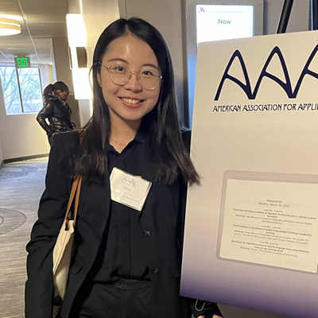
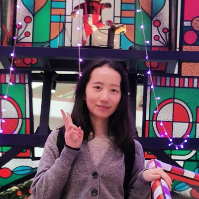
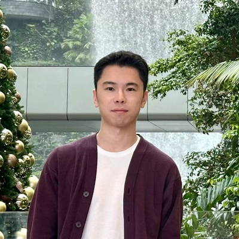
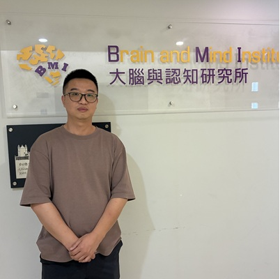
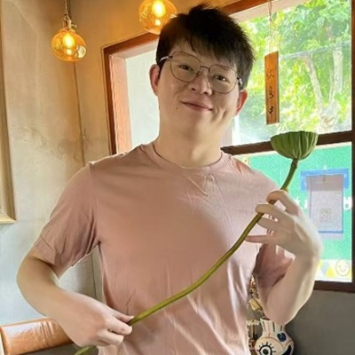
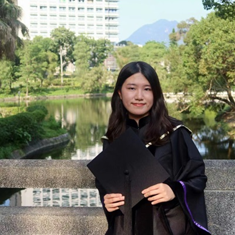
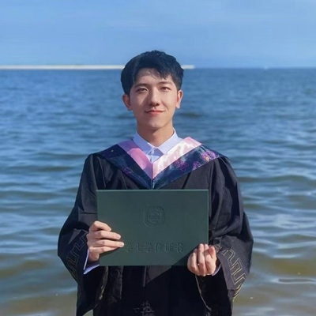
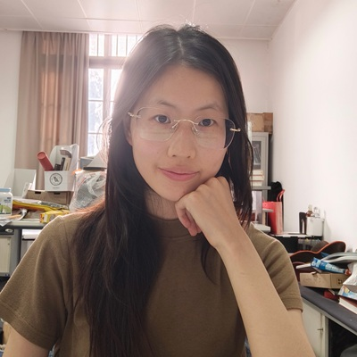
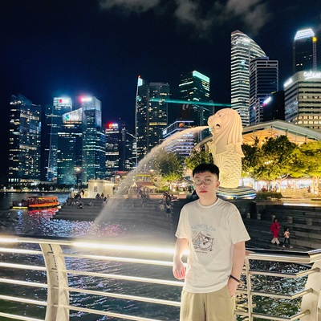
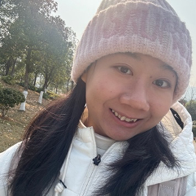

Postdoc in Department of Communication Sciences and Disorders, UT-Austin, 2017
Postdoc in Department of Linguistics and Modern Languages, CUHK, 2016
Ph.D. in Psychology, South China Normal University, 2015
B.A. in Applied Psychology, South China Normal University, 2009
Chen Hong received both his B.S. and Ph.D. in Biomedical Engineering from Tsinghua University. He is interested in how the brain processes music, speech, and other auditory stimuli, specifically from acoustic to semantic information and even emotional feelings.
chenhong[at]cuhk.edu.hk
Weiyi Li earned her Ph.D. in Applied Linguistics from the Chinese University of Hong Kong, specializing in the psycholinguistics of bilingual and multilingual nonliteral language processing, particularly irony comprehension in second-language learners, and the individual differences in language acquisition. She holds an M.Sc. in Education from the University of Pennsylvania and a B.A. in English/Translation from Central China Normal University.
weiyili[at]cuhk.edu.hk
Rujun Duan received her Ph.D. in Psychology from The Education University of Hong Kong. Her research interests mainly focus on how children learn and process language, specifically the underlying mechanisms and the developmental trajectory of statistical learning of language acquisition throughout childhood.
rujunduan[at]cuhk.edu.hk
Hanlin Wu holds a Ph.D. in Linguistics from The Chinese University of Hong Kong. He is interested in how speech is represented, processed, and learned by human brains (and artificial systems).
hanlinwu[at]cuhk.edu.hk
Fan Bai received his PhD from the Max Planck Institute for Psycholinguistics. His research interests focus on the neural coding of speech perception and comprehension, particularly on how statistical information is associated with and reflected during speech representation. Before joining Feng’s lab, he worked with Andrea Martin and Antje Meyer, conducting research on higher-level speech processing (e.g., hierarchical structure building) using M/EEG and ECoG.
fan.bai[at]cuhk.edu.hk
Ming Song received his Ph.D. in Cognitive Neuroscience and B.S. in Software Engineering from East China Normal University. His research interests focus on semantic representation and processing, with an emphasis on predictive processing, semantic uncertainty, and individual differences.
daxiasongm[at]gmail.comQiren Dong obtained a BSc Computer Science from University College London with the minor in Biomedical Engineering. His principal research interests are in the fields of speech perception and second/third language acquisition, via using computational approaches.
qiren.dong[at]link.cuhk.edu.hk
Jiayin Huang received her M.A. in Linguistics from the Chinese University of Hong Kong. Her research focuses on non-native grammar learning, particularly in instructor-learner interactive contexts. She is also interested in exploring individual differences that underlie second language grammar learning.
jiayinhuang[at]link.cuhk.edu.hkZhenjiang Cui obtained an MSc in Psychology from Beijing Normal University and a BSc in Biological Science from Northwest A&F University. His primary research interests include cognitive neuroscience, category learning, and semantic representation.
zhenjiangcui[at]link.cuhk.edu.hk
Mingchuan Yang obtained a B.A. from Nanjing Normal University and an M.A. from Beijing Normal University. His primary research interests focus on the electrophysiological mechanisms of language learning and the effects of non-invasive brain stimulation (NIBS) on modulating language learning and processing abilities.
mingchuan.yang[at]link.cuhk.edu.hk
Kangning Qin obtained an MSc in Cognitive Neuroscience from East China Normal University and a BSc in Applied Psychology from Nanjing Normal University. She is interested in how concepts are learned by human brains (and artifical systems).
conniekk729[at]gmail.com
Yidu Wu obtained his BEng and Msc in Computer Science from Chongqing University and City University of Hong Kong, respectively. He currently serves as a laboratory technician.
yiduwu[at]cuhk.edu.hkManyee Li received her B.A. degrees in English from the Chongqing University in 2024. She is mainly responsible for preparing the materials needed for the experiments and collecting experimental data.
Zorali[at]cuhk.edu.hk
Xinwen Chen received a B.A. in English Language and Literature (Teacher Education) from South China Normal University and an M.A. in Linguistics from the Chinese University of Hong Kong. She is currently the lab manager, responsible for lab operations, data collection, and experiment coordination.
xinwen.chen[at]cuhk.edu.hkYangchenhui Liu holds a B.A. in English Language and Literature from Zhejiang University and an M.Sc. in Applied Linguistics and Second Language Acquisition from the University of Oxford. She currently serves as a Research Assistant, supporting experiment scheduling, data collection, and data management.
yangchenhuiliu[at]cuhk.edu.hk| Shuguang Yang | South China Normal University |
| Yaji He | Institute of Psychology, Chinese Academy of Sciences |
| Wenjia ZHANG | Postdoc, now Associate Professor at Xi'an International Studies University |
| Yu LI | Postdoc, now Assistant Professor at BNBU |
| Naishi Feng | Postdoc, now Lecturer at Shenyang University |
| Peilun Song | Postdoc, now Research Associate Professor at Henan academy of innovations in medical science |
| Zhenzhong GAN | Lab technician |
| Haimei Zhou | Visiting Student |
| Ruyi Gan | Lab manager |
| Nan Wang | RA, now PhD at University of Rochester |
| Xuancu Hong | PhD student, now Lecturer at HKUST(GZ) |
| Ximing Shao | Postdoc, now postdoctoral researcher at Birkbeck, University of London |